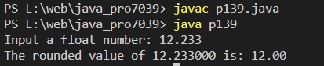

Write a Java program to accept a float value of number and return a rounded float value.
Code:-
import java.util.*;
public class p139 {
public static void main(String[] args)
{
Scanner in = new Scanner(System.in);
System.out.print("Input a float number: ");
float x = in.nextFloat();
System.out.printf("The rounded value of %f is: %.2f",x, round_num(x));
System.out.printf("\n");
}
public static float round_num(float fn)
{
float f_num = (float)Math.floor(fn);
float c_num = (float)Math.ceil(fn);
if ((fn - f_num) > (c_num - fn))
{
return c_num;
}
else if ((c_num - fn) > (fn - f_num))
{
return f_num;
}
else
{
return c_num;
}
}
}
Output:-
